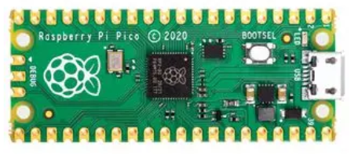
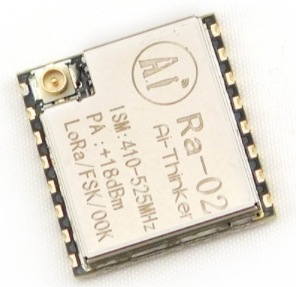
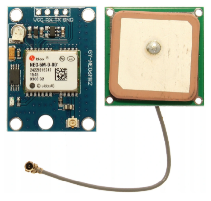
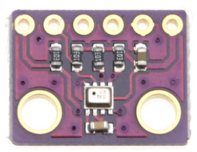
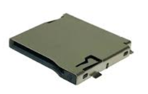

Let's kickstart your project!
We designed a motherboard tailored to accelerate your mission based on Raspberry Pi Pico module with the Raspberry RP2040 microcontroller. The RP2040 is a dual-core ARM Cortex M0+ based chip clocked at 133 MHz. The module has 264 kB of SRAM and 2 MB of Flash memory. The chip features 26 GPIO pins that operate at 3.3 V and a temperature sensor. Raspberry Pi Pico is programmed in C/C++ and MicroPython via a microUSB connector.
- We kept it simple, you can program it with ArduinoIDE.
- Ready to launch motherboard with radio communication and data storage module. Go to our Github and download hardware and software project!
- Mix however you like, you can connect GPS module, sensors or ArduCam of your choice
- Qwiic, Groove or Gold pins? Whatever connector you need, we got you covered!.
Source project
BOM
It is very important to estimate the cost of the mission. We have prepared an approximate cost estimate for purchasing all required parts for a basic mission:
| # | Element | Cost |
|---|---|---|
| 1 | Raspberry Pi Pico | 5 USD |
| 2 | Radio module RA - 02 | 8 USD |
| 3 | GPS Ublox Neo-m6 | 8 USD |
| 4 | BMP280 | 5 USD |
| 5 | 112J-TDAR-R01 | 2 USD |
| 6 | Total cost | aprox. 30 USD |
You can buy all the components from stores that specialize in ellectronics. Just type the name of the component into your search engine.
Out of ideas? Here's how your basic flight computer can look like
Think how can you implement it in your mission
- Raspberry Pi Pico is a tiny module with RP2040 microchip. Progammable in C/C++ and MicroPython module can be easily adapted to act as flight computer located in capsule. 
- Radio module RA - 02 based on SX1278 system provides communication in modulations FSK, GFSK, MSK, GMSK, LoRa and OOk. Good performance allows us to communicate over long distances. Low power consumption is also an advantage. 
- The GPS Ublox Neo-m6 is a cost-effective GPS module. This sensor is used to determine the exact position of the capsule and real-time position of the balloon. Like an absolute barometric pressure sensor, the GPS module is one of the most important peripherals which helps to trace the balloon’s flight and locate the capsule. 
- The BMP280 module measures an absolute barometric pressure and actual temperature (inside or outside capsule). It is a basic module which allows you to determine the maximum altitude your balloon has reached. 
- The microSD 112J-TDAR-R01 module allows you to communicate with the memory card and write flight data on them. After flight and recovery of the capsule, you can interpret and analyze recorded data. It can help to find out what happened during the balloon flight. 